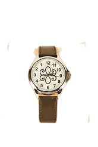
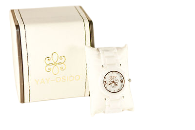
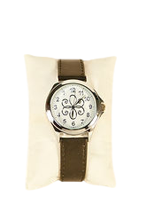
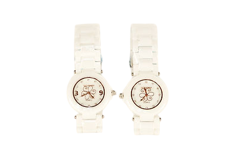
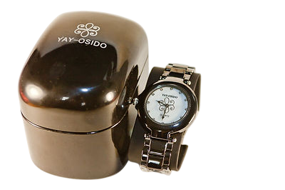
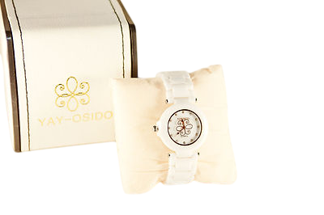
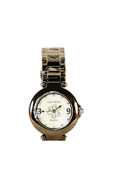
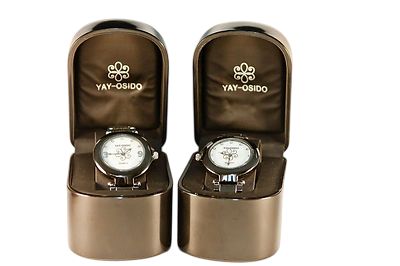

Часы "Яй-Осидо"








Часы«Яй-Осидо» – механические часы со стрелками, вращающимися в янском направлении движения, и имеющие графическое изображение символа «Зеркало Жизни» в центре циферблата.
В основе разработки — Гармонизатор "Яй-Осидо: Зеркало Жизни" Патент Украины на полезную модель № 58256 от 11.04.2011
Гармонизатор «Яй-Осидо» продолжает серию гармонизаторов «Ключ Жизни». Научная основа разработки – методы Альтернативной Психологии, рунные технологии (В.П.Гоч), результаты проведенных научных исследований, полученные современными инструментальными электрофизиологическими методами (ЭКГ, ЭЭГ, ЭМГ, Фолля, ГРВ), с помощью системы "AURA-Vibralmag", диагностического комплекса "Омега-2М" и методом информационного контроля (торсионный фазовый портрет). В работе устройства в качестве кодирующего элемента использовано особое сочетание ключей янского и иньского происхождения, которые в соединении со спиралями образуют новый символ – "символ Жизни".
Гармонизатор оказывает преобразующее и гармонизирующее воздействие на биологические объекты и окружающее пространство. Результатом воздействия гармонизатора на объект является восстановление информационных составляющих поля объекта во времени. В процессе работы гармонизатора происходит коррекция метаморфоз времени систем на многомерном уровне. Новый гармонизатор способствует адаптации человека в Новом Времени.
При ношении Часов “Яй-Осидо” с изображением символа Зеркало Жизни: снимается усталость, повышаются интеллектуальная и физическая работоспособность, проводится коррекция психоэмоционального состояния (снижаются раздражительность, тревожность, ригидность), сокращается время восстановления организма, повышаются адаптационные возможности.
Способ применения: ношение Часов только на левой руке. Почему Часы нужно носить на левой руке?
Энергия времени входит в живую систему «человек» и через левую руку. Это энергия Времени, энергия Любви, которая дана человеку от Бога для реализации творческого потенциала. Человек имеет контакт со Временем на одномерном уровне. Движение энергии кундалини происходит по часовой стрелке. Люди из-за того, что находились в зазеркалье, ошибочно приняли это направление движения времени за норму. Видимо, поэтому во все время существования человечества, люди носили механические часы с иньским направлением движения стрелок . А такие часы надо бало носить на правой руке. Это открывало бы энергетические каналы через правую руку. А в данный момент, из-за того, что на левой руке с тех пор долгое время закрывались каналы движения энергии, для восстановления сферы времени надо носить часы на левой руке. У людей открываются контактные энергетические каналы тех энергий, которые остались в прошлом. Данный контакт дает возможность использовать эти депонированные энергии, оставленные в прошлом. Эта энергия распространяется по всему родовому древу тех людей, которые носят часы «Яй-Осидо» на левой руке. Освобожденная энергия рода направляется в будущее, и помогает открыть новый сосуд рода. Энергия используется в тех пространствах, где находится много часов «Яй-Осидо». Из-за многолетней блокировки левой руки при поступлении энергии времени искажалась сферическая форма личного времени человека. Сегодня или начиная с того момента, когда появились часы «Яй-Осидо», открываются возможность использования энергии, оставшейся в прошлом, и возможность восстановления сферической формы времени. А это восстановление искажения формы времени закрывает воздействие негативных информаций от прошлого. И не только от прошлого времени, но и сегодняшнего, от тех негативных информаций, которые хотят проникнуть через искажения в форме, нарушая ПСС. Результатом такого проникновения уже стали события в Чернобыле, на Черное море и многие другие форсмажорные обстоятельства. Основными причинами природных катаклизмов являются искажения формы времени (сферы) и ношение механических часов с иньским направлением движения стрелок на левой руке. В данный момент наши часы «Яй-Осидо» устраняют искажения в форме времени и открывают возможность использовать неиспользованные жизненные энергии для потомков. Таким образом, люди будут не только сами долго жить, но и наши потомки, будущие поколения, станут долгожителями. Для людей становится реальностью здоровый образ жизни и в пожилом возрасте.
Восстанавливается возможность реализации творческого потенциала всего Человечества и каждого человека в отдельности. Почему стрелки Часов «Яй-Осидо» движутся именно в таком направлении?
Такое направление (против принятого сейчас направления движения часовой стрелки, обозначаемое в Альтернативной Психологии как «янское» направление движения) характеризует движение Всемирного Времени, времени как свойства бесконечно развивающейся материи. Солнце вращается вокруг своей оси «против часовой стрелки», Земля вращается вокруг своей оси и вокруг Солнца «против часовой стрелки», и планета Красоты Венера вращается вокруг Солнца против часовой стрелки. Ребенок в момент рождения, проходя по родовым путям, также движется по спирали янской природы, «против часовой стрелки». Янское направление движения — это движение созидательное, формообразующее. Таким образом, Часы «Яй-Осидо» восстанавливают естественный и закономерный для человека ход времени. В восьмеричной символике человека верхний эллипс рисуется против часовой стрелки, а нижний эллипс — по часовой. Если каждый человек имеет свою 8-меричную символику, то при ношении таких часов, человек на уровне своего символа поднимается в верхние более высокие уровни. Через это движение люди поднимаются на верхние уровни сознания. Часы «Яй-Осидо» способствуют синхронизации движения энергии времени в организме человека с движением Всемирного Времени.
Какое действие Часы «Яй-Осидо» оказывают на общее состояние и самочувствие человека?
Во-первых, благодаря действию Часов происходит восстановление сферической формы личного
времени человека и открывается
возможность рациональной реализации энергии Времени в жизни.
Во-вторых, ношение Часов на левой руке позитивно влияет на работу таких важнейших
физиологических органов как щитовидная
железа и головной мозг.
Щитовидная железа – это биологические часы в организме человека. Через каждые 17 минут вся кровь проходит через щитовидную железу и обрабатывается йодом. Поэтому нарушение движения энергии Времени провоцирует заболевание щитовидной железы. Не случайно изобретению Часов «Яй-Осидо» предшествовала работа с Каспийским морем, которое в масштабе Земного шара является проекцией щитовидной железы и горловой чакры Вишудха, отвечающей за реализацию творческого потенциала человека. Если реализация творческого потенциала перекрыта, то под вопросом и реализация самой Судьбы человека, человечества в целом. Таким образом, с помощью Часов «Яй-Осидо» синхронизируются биоритмы организма человека и происходит со-настройка с природными ритмами, налаживаются метаморфозы стихий.
Часы «Яй-Осидо» благоприятно влияют на работу головного мозга. Левая рука, на которой находятся часы, соотносится с правым полушарием головного мозга, отвечающим за интуицию, парадоксально-альтернативное видение, принятие творческих решений. Часы усиливают работу правого полушария и способствуют реализации творческого потенциала каждого человека. При этом не только активизируется работа правого полушария, но и симметрируется и гармонизируется работа всего головного мозга. «Когерентное сознание способно проявить свойства выше обычного сознания, чтобы открыть доступ к более высоким уровням информации, позволяя настроить мозговой «приёмник» на особый диапазон частот» («Азбука «Ключей Жизни» Я.С.Ибадов, Д.Л.Катаманова). При использовании Часов возрастает работоспособность головного мозга, который постоянно получает энергию Времени, энергию любви и творчества непосредственно из самого Источника Времени.